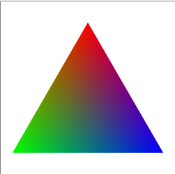
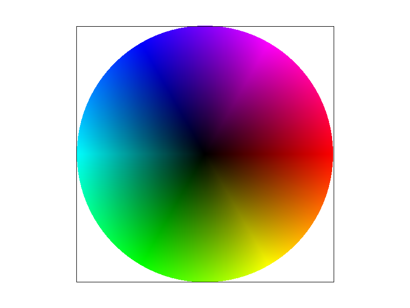
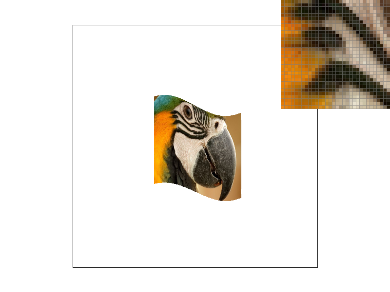
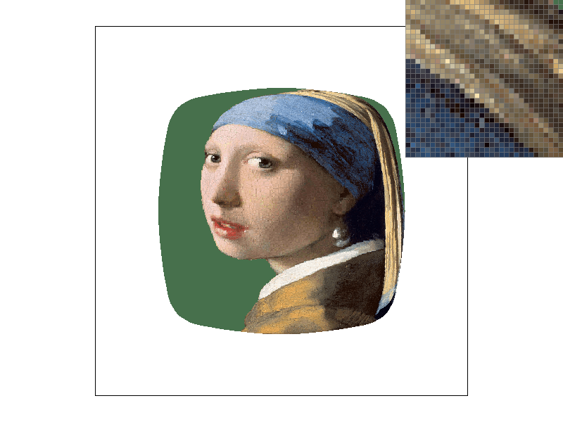

Overview
In this homework, I implemented a simple rasterizer capable of rendering 2D vector graphics. The project covered several key graphics programming concepts, including drawing single-color triangles, implementing antialiasing through supersampling, applying transformations, and texture mapping with antialiasing. I particularly found the challenge of optimizing the triangle rasterization process enlightening, as it required a deep understanding of spatial relationships and efficient iteration through pixel data.
Section I: Rasterization
Part 1: Rasterizing single-color triangles
To rasterize triangles, I employed an algorithm that iterates over each pixel within the triangle's bounding box to determine if the pixel's center lies within the triangle. This process involves calculating the barycentric coordinates for the pixel's center relative to the triangle's vertices. A pixel is colored if its center is determined to be inside the triangle, based on the condition that all barycentric coordinates are positive and sum to less than one.
The algorithm efficiently narrows down the number of pixels to be checked by first calculating the triangle's axis-aligned bounding box. This ensures that only pixels that could potentially lie within the triangle are considered. The barycentric coordinate method allows for an elegant determination of a point's inclusion within the triangle, accommodating the case where points lie exactly on one of the triangle's edges.

|
Part 2: Antialiasing by Supersampling
Antialiasing through supersampling is a technique aimed at reducing the visual artifacts at the edges of rendered shapes, notably triangles, to achieve smoother visual outputs. By sampling multiple points within each pixel and averaging their colors, we mitigate the jagged edges commonly observed in rasterized images, resulting in a more visually appealing image. The core of this approach lies in the implementation of a supersampling algorithm alongside the necessary data structures to support high-resolution sampling.
In adapting the rasterization pipeline for supersampling, we introduced a supersampled buffer, effectively rasterizing scenes at a higher resolution. Each pixel's final color is then determined by averaging the colors of the supersamples within it. This process was particularly crucial for triangles, where the edges are most susceptible to aliasing effects. Modifications to the rasterization pipeline included:
- Expanding the
sample_bufferto hold a higher number of samples. - Adjusting the
rasterize_trianglefunction to account for supersampling, thus ensuring that each triangle is rasterized at the finer resolution dictated by the supersampling rate. - Implementing a
resolve_to_framebufferfunction that averages supersample colors to determine each pixel's final color.
Supersampling is useful for its ability to provide a higher-quality rendering of vector graphics, especially evident in the rendering of triangles where edges can otherwise appear jagged due to the aliasing effect. This method significantly improves image quality by providing a more accurate representation of edges and fine details.
| Sample Rate 1 | Sample Rate 4 | Sample Rate 16 |
|---|---|---|

|

|

|
As observed in the screenshots above, increasing the sample rate from 1 to 16 progressively smooths out the edges of the triangles, significantly reducing the aliasing effect. At a sample rate of 1, the edges are quite jagged, while at 16, they are markedly smoother, demonstrating the effectiveness of supersampling in antialiasing. This smoothing effect is due to the averaging process, which blends the color of edge pixels with their background, creating a gradient that visually softens the edge. Such results underscore the importance of supersampling in rendering high-quality vector graphics.
Part 3: Transforms
I wanted to make the robot wave, and I also wanted to change the color of his body to blue and his arms to gold (Cal colors!).
Section II: Sampling
Part 4: Barycentric Coordinates
Barycentric coordinates provide a method for expressing the position of a point within a triangle as a weighted average of the triangle's vertices. This system is particularly useful in graphics for interpolating values across the surface of a triangle. Each vertex of the triangle is assigned a barycentric coordinate, with the sum of the coordinates equaling one. A point inside the triangle can then be described by how much it 'leans' towards each vertex, allowing for smooth color gradients and texture mapping.
When rasterizing a triangle with vertex colors, we calculate the barycentric coordinates for each pixel within the triangle. The pixel's color is then a mix of the vertex colors, weighted by these coordinates. This results in a gradient where the color smoothly changes from one vertex color to another, filling the triangle with a blend of colors. This technique is visible in the test7.svg, which displays a single triangle with vertices in red, green, and blue.
| 
|

|
The image above showcases a triangle where the vertices are defined with primary colors: red, green, and blue. Using barycentric coordinates, we interpolate these colors across the triangle's area, resulting in a smooth transition and a rich blend of colors towards the center. This technique demonstrates the power of barycentric coordinates in rendering complex color patterns with simple geometric shapes.
Task 5: Pixel Sampling for Texture Mapping
In Task 5, I implemented pixel sampling techniques to enhance texture mapping on 2D vector graphics rendered by our rasterizer. Pixel sampling is crucial for determining how textures are applied to surfaces, influencing the final visual quality. The core of this task was to implement two pixel sampling methods: nearest and bilinear sampling.
Nearest sampling selects the closest texel to the pixel being textured, which is straightforward but can lead to a pixelated look, especially when textures are stretched. Bilinear sampling, on the other hand, considers the four closest texels to the texture coordinate and performs a linear interpolation among them, resulting in smoother transitions and more natural-looking textures. These methods were implemented in the Texture::sample_nearest and Texture::sample_bilinear functions, respectively. Within the RasterizerImp::rasterize_textured_triangle function, based on the psm mode, the appropriate sampling method is used to fetch texel colors and apply them to the triangle's pixels. This approach allows for dynamic switching between sampling methods, offering a balance between performance and visual fidelity. When compared, bilinear sampling clearly outperforms nearest sampling by reducing the pixelation effect and providing smoother texture mapping, especially noticeable in SVG files within the svg/texmap/ directory.
To illustrate the differences between these sampling methods, I examined various SVG files, focusing on areas where bilinear sampling significantly improves over nearest sampling. The comparison included screenshots with both sampling methods at 1 and 16 samples per pixel, demonstrating bilinear sampling's superiority in delivering smoother and more visually appealing textures. This task not only enhanced the rasterizer's capability to render textured graphics with higher quality but also provided insights into the trade-offs between different sampling strategies.
In practice, the most significant contrasts between the two methods become apparent when the texture space is zoomed in on the screen space, leading to a small L metric at the sample point. This scenario causes the nearest-neighbor method to amplify the texel space's pixelation into the screen space, as it maps a single texel to several pixels during magnification.
Nearest Sampling at 1x |
Nearest Sampling at 16x |
 Bilinear Sampling at 1x |
Bilinear Sampling at 16x |
Comparative screenshots showcasing the effects of nearest and bilinear sampling at different sample rates.
Task 6: Level Sampling for Texture Mapping
Level sampling is a sophisticated method in texture mapping that chooses the appropriate level of detail from a series of precomputed textures, known as mipmaps, based on the viewer's distance from the texture. This approach allows for more efficient rendering and reduces aliasing artifacts. To implement level sampling in our rasterizer, we updated the rasterize_textured_triangle function to select mipmaps dynamically based on the calculated level from the Texture::get_level function. We used the SampleParams struct to pass detailed sampling parameters, including UV coordinates and their differentials, to determine the most suitable mipmap level for texture lookup.
Choosing between pixel sampling methods (nearest and bilinear) and level sampling methods (zero, nearest, and linear) involves tradeoffs in rendering speed, memory usage, and the quality of antialiasing. Nearest sampling is fast and uses less memory but can result in pixelated images, especially at lower resolutions. Bilinear sampling provides smoother transitions at the cost of additional computations. Level sampling, particularly linear interpolation between levels, offers superior antialiasing by blending textures from adjacent mipmaps but requires more memory to store the mipmaps and additional computation to select the appropriate levels.
The following images illustrate the impact of different sampling methods on texture mapping. Observe how each method affects the visual quality and potential use cases for optimizing rendering performance versus image quality.
|  L_ZERO and P_NEAREST |
L_ZERO and P_LINEAR |
L_NEAREST and P_NEAREST |
L_NEAREST and P_LINEAR |
For custom texture mapping visualization, I chose an image that demonstrates the nuances between these sampling techniques, especially when zooming in or out.